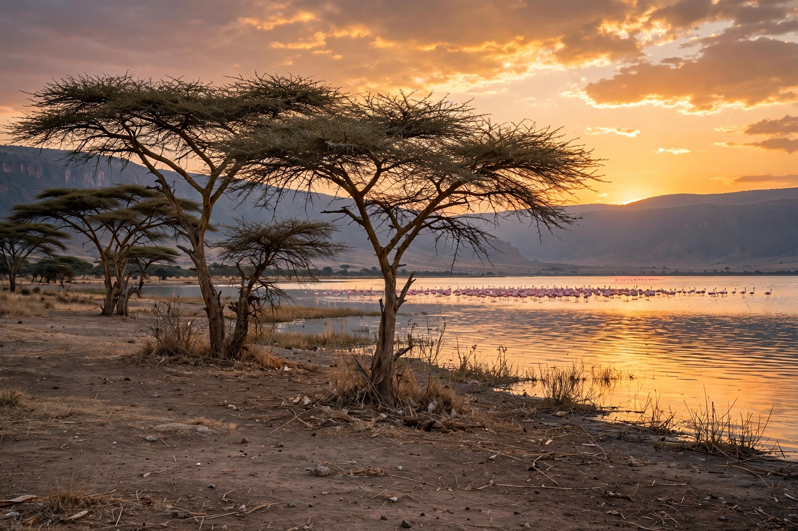

Lake Baringo
| Lake Baringo | |
|---|---|
 Lake Baringo, Kenya | |
| Location | Baringo County, Rift Valley, Kenya |
| Coordinates | 0°38′N 36°05′E |
| Type | Freshwater lake |
| Primary inflows | Molo River, Perkerra River, Ol Arabel |
| Basin countries | Kenya |
| Surface area | 130 km² (50 sq mi) |
| Surface elevation | 970 m (3,180 ft) |
Lake Baringo is, after Lake Turkana, the northernmost of the Kenyan Rift Valley lakes, with a surface area of about 130 square kilometres (50 sq mi) and an elevation of about 970 metres (3,180 ft). The lake is fed by several rivers: the Molo, Perkerra and Ol Arabel. It has no obvious outlet; its waters are assumed to seep through lake sediments into the faulted volcanic bedrock.
It is one of the two freshwater lakes in the Rift Valley in Kenya, the other being Lake Naivasha. The lake lies in a hot, arid environment, remote from the coast, and is a habitat for more than 470 species of birds, occasionally including migrating greater flamingos. A heronry of Goliath herons is located on a rocky islet in the lake known as Gibraltar.
Description
The lake is part of the East African Rift system. The Tugen Hills, an uplifted fault block of volcanic and metamorphic rocks, lies west of the lake. The Laikipia Escarpment lies to the east. Water flows into the lake from the Mau Hills and Tugen Hills. Baringo is a critical habitat and refuge for more than 500 species of birds and fauna, some of them significant for migration, while it also provides an important habitat for seven species of fish.
Flora and fauna
The lake supports a fishery, although there are no large fish such as Nile perch. Fish species include the endemic Baringo barb. Nile crocodiles and hippopotamuses are common in the lake, and the surrounding area supports giraffes (the endangered Rothschild's giraffe), zebras and other wildlife. The area is a designated Important Bird Area and a Ramsar wetland site of international importance.
People
The shores of the lake are home to the Il Chamus (Njemps), Pokot and Tugen peoples. Tourism is a growing source of income, with visitors drawn by birdwatching, boat trips and the hot springs at the northern end of the lake.